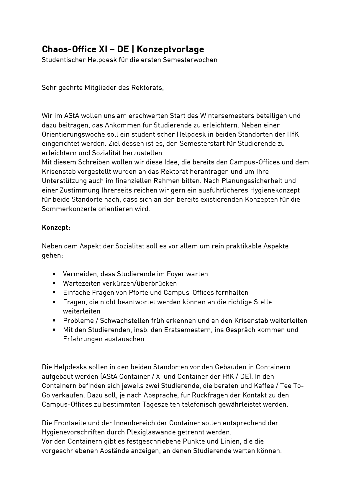
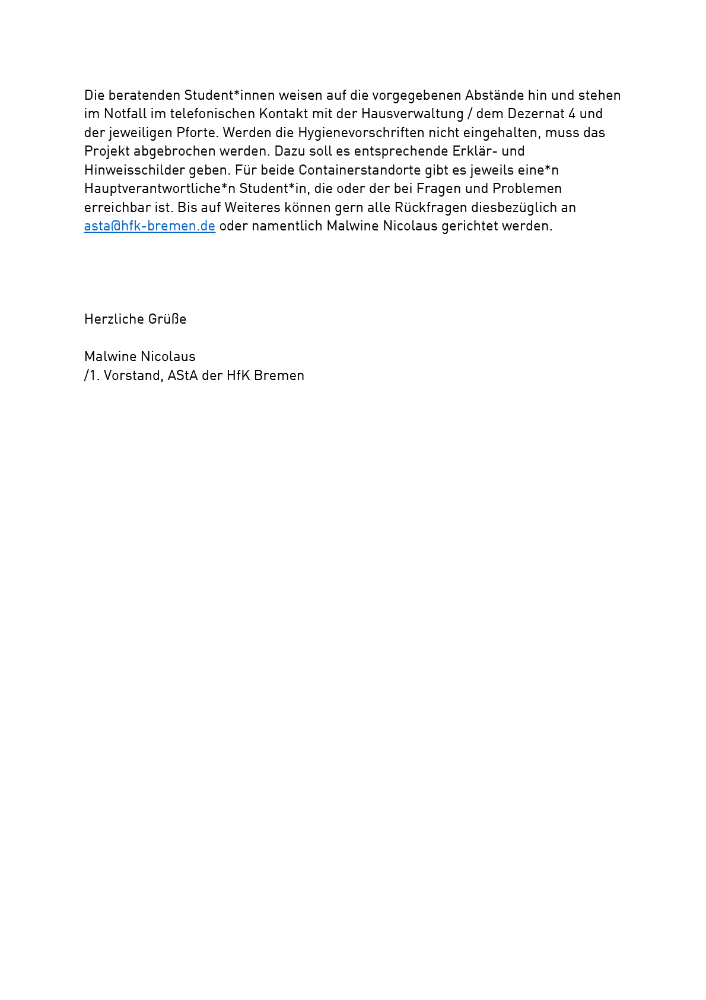
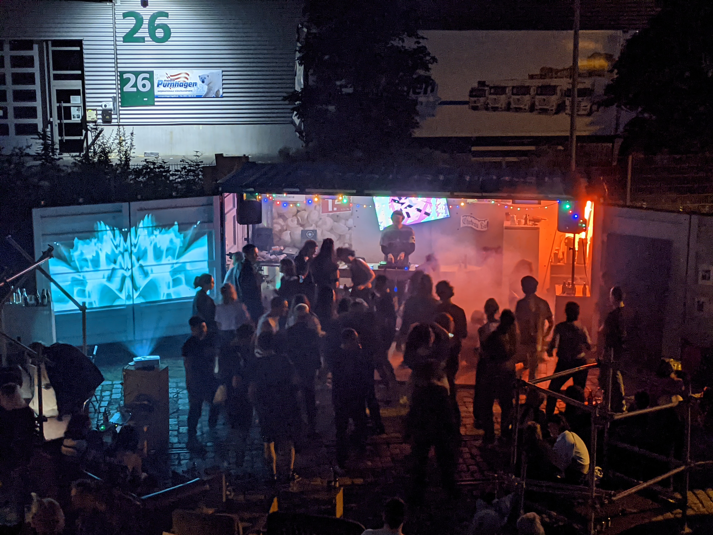

Chaos Office
/////////////////////////
Artistic protest over two years 2020-2022
Container in front of the university as a project space
Cooperation with Radio Angrezi, project groups, AStA, various courses
Full documentation: "Zwei Jahre Chaos"
/////////////////////////
Einleitung
Ich wurde diverse Male gefragt, was eigentlich das Chaos Office ist - häufig verwundert oder irritiert und
regelmäßig erfüllt von einem gewissen Vorwurf: Was… bitte… soll das alles? Kann man das nicht auch mal wieder sein
lassen? Wer? Warum? Weshalb? Das Chaos Office hatte scheinbar diverse Fragen aufgeworfen - Fragen, welche
verblüffender Weise von einer staatlichen Institution, die sich gelegentlich Kunsthochschule nennt, nicht wirklich
beantwortet werden konnten.
„Was macht ‘n ihr hier eigentlich?“
„Das Chaos Office… so… so… …“
„Zwei Kaffee bitte! Schwarz!“
„Versteh ich nicht... Also du studierst schon hier? Oder hat dich jemand beauftragt?“
„Hier kann man rauchen, oder? Gehört doch schließlich nicht zur HfK.“
„Bitte alle einscannen - Das hier gehört zur HfK, so wie alles andere auch!“
Nach zwei Jahren Chaos auf dem denkmalgeschützten Parkplatz der HfK wage ich es hiermit nun einmal zu dokumentieren,
um was es sich bei dem Chaos Office handeln könnte. Am Ende hatten vermutlich die meisten mit ihren Annahmen auf die
ein oder andere Weise recht, denn das Chaos Office sollte sich gewissermaßen einer klaren Definition entziehen.
Zunächst einmal aber eine grobe Beschreibung für alle gänzlich Ahnungslosen:
„Das “Chaos Office” ist ein Container gegenüber dem Haupteingang der HfK am Speicher XI. Das “Chaos Office” gehört
dabei der Studierendenschaft der HfK und wird durch den AStA verwaltet. Alle Studierenden können den Container für
Projekte oder Veranstaltungen nutzen. Als Chaos Office hat der Container das erste Mal im Sommer 2020 nach dem
ersten Corona-Shutdown geöffnet. Seitdem dient der Ort dazu Studierende zu vernetzen, trotz COVID-19-Pandemie und
Online-Lehre an der Hochschule einen sozialen Raum zu schaffen, und durch die COVID-19-Pandemie aufgerüttelte
Strukturen der Hochschule zu hinterfragen.“
Die Anfänge
Ich muss gestehen, dass seitdem ich an der HfK studierte, ich nicht ganz nachvollziehen konnte, warum dieser
Container direkt gegenüber dem HfK Eingang keinerlei Verwendung fand. Ausnahmsweise eine nicht völlig rostige Beule,
nein, sondern ein fast gänzlich neuer „Side-Opener“ - Also die Elite unter den Containern, 20 Fuß lang, dreieinhalb
Tonnen schwer, der sich von der Front mittels Zwei Türen, als auch von der Seite mittels Vier Türen öffnen lässt.
Bereits als ich zur Aufnahmeprüfung an die HfK gekommen war, stand da diese blaue Box hinter einem selten dämlich
verlaufenden Zaun, umgeben von einer schimmligen Terrasse, ungenutzt. Auch wenn es mir nicht allzu bewusst war,
stand bereits fest, dass ich mit diesem Ding wohl etwas anfangen möchte.
Nachdem ich schließlich ein Jahr lang bereits studierte und im AStA - dem Allgemeinen Studierendenausschuss, also
sowas wie die Task-Force der Studierendenschaft - das Referat Kultur innehielt, erfuhr ich schließlich den
Zahlencode des Containers und konnte einen ersten Blick in sein Inneres werfen: Der Container hatte bereits einen
Drehstrom Anschluss inklusive Auflösung, und war relativ durchdacht ausgebaut worden. Der einzige Mangel an der
Sache: Der Container war bis unter die Decke voll gemüllt. Daran sollte sich für ein halbes Jahr nichts ändern, da
erst die Hochschultage über die Angelegenheit hereinbrachen und schließlich ein ganzer Corona-Shutdown. Zeit also
ein wenig nachzudenken.
- Warum studiere ich gerade?
- Was studiere ich gerade?
- Wo studiere ich gerade?
- Was bedeutet studieren für mich?
Mit der COVID-19-Pandemie und der aktionistisch eingeführten Online-Lehre habe ich angefangen mein Studium
grundlegend zu hinterfragen. „Online-Lehre“ erscheint mir dabei bis heute prinzipiell falsch, und dass staatliche
Hochschulen diese kollektiv eingeführt hatten, erachte ich weiterhin als absolutes Armutszeugnis der Institutionen.
Wenn man es als Universität kommentarlos hinnimmt, dass irgendwelche fucking Kaufhäuser für unsere Gesellschaft
wichtiger sind als Universitäten, dann hat man bereits alles aufgegeben. Ein Eingeständnis der eigenen
Bedeutungslosigkeit, sodass sie im Realen nicht mehr zu existieren brauchen. Ein Eingeständnis keinerlei
Selbstbewusstsein mehr aufbringen zu können, sodass es ihnen egal war, wo und wie sie überdauern. Die Form des
Studiums die ich mir einst erhoffte, und vor der Pandemie zumindest an einer Kunsthochschule noch zu finden glaubte,
wurde innerhalb weniger Stunden im Corona-Krisenstab der HfK hinfort geblasen. Ich denke, ich war nicht allein mit
dem Gefühl, dass hier gerade etwas ganz Fundamentales in unserer Gesellschaft nachhaltig zerstört wurde. Aus genau
diesen aufgerüttelten Zuständen heraus ergab sich mir eine Hoffnung, die ich in Form eines Containers zu ergreifen
versuchte:
Notwendigkeiten:
1. Sozialer Raum - da wir isoliert sind.
2. Debatte - da wir schweigen.
3. Musik - da wir sonst nur Lärm ertragen.
Ich wollte genau in der Zeit der Pandemie, als die Hochschule für einen Moment von ihrer Tobsucht erlöst war, die
Leere nutzen, um einen Ort zu schaffen welcher die Online-Lehre ad absurdum führt und die Hochschule in ihrer
Existenz infrage stellt. Was schließlich bedeutete, die Studierenden erst einmal wieder an die Hochschule zu
bringen.
An dieser Stelle ein kurzer Einwand: Bei nahezu allen in Zukunft geplanten Aktionen und Veranstaltungen war stets
eine gewisse Zusammenarbeit mit der Hochschule, oder zumindest deren Toleranz von Nöten. Was in den kommenden zwei
Jahren folgte war also ein währendes Katz und Maus Spiel aus Vorlagen, gezieltem Überschreiten der Vorlagen,
ausarbeiten gemeinsamer Regularien, umdeuten von Regularien etc.. Es war von Beginn an durchschaubar, dass die
Hochschule kein sonderlich ausgeprägtes Interesse an einem studentischen Anarcho-Container direkt vor ihrer Tür
hatte, also war die gesamte Taktik darauf ausgelegt, stets so weit zu gehen, dass niemand etwas Handfestes gegen
einen vorweisen konnte, man aber zeitgleich nicht zu sehr in Ungnade verfiel, damit der öffentliche Druck genügte,
um weiterhin toleriert zu werden.
An dieser Stelle möchte ich mich somit einmal bei der Hochschule bedanken. Nicht jeder hätte das Projekt solange
toleriert.
Die erste Veranstaltung am Chaos Office, dass da seinen Namen noch nicht trug, sollte schließlich ein „AStA
Sommerkonzert“ werden betitelt mit „Kissing the Screen“. Technisch gesehen handelte es sich um ein AStA Sommerfest.
Da die Hochschule jedoch nicht den Eindruck vermitteln wollte, Feste zu feiern, musste die Veranstaltung in
„Sommerkonzert“ umbenannt werden. Die Angelegenheit selbst blieb jedoch die gleiche:

Der unscheinbare Container rückte somit einen Schritt tiefer in die allgemeine Aufmerksamkeit der Hochschule. Und
insbesondere für Studierende war das Signal gesetzt: Was auch immer in der Hochschule gilt, hat nicht unbedingt
Auswirkungen darauf, was wir hier draußen machen.
WiSe 2020/21
Je näher das Wintersemester 2020/21 rückte und je mehr es allen dämmerte, dass wohl niemand ein normales Semester
vorfinden würde, desto klarer wurde, wozu der Container dienen sollte. Etwa zwei Wochen vor Semesterstart, in einem
bemerkenswert schnellen Gespräch mit einem meiner AStA-Kollegen tauschten wir uns darüber aus, dass es einen Student
Help Desk geben müsse. Der Container sollte als sozialer Raum vor der HfK für zwei Wochen geöffnet sein und
Studierende an der Hochschule empfangen.
Der Name den mein AStA-Kollege vorschlug: Chaos Office.
Bezahlen sollte das Rektorat aus Digitalisierungsgeldern.



Der Antrag wurde angenommen.
Der Umbau des Containers zu einem Café mit Tresen erfolgte innerhalb eines Nachmittages. Betrieben wurde das Chaos
Office schließlich für zwei Wochen von studentischen Mitarbeiter*innen des Café Lu, welche auch zuvor mit der
Einrichtung des Containers beschäftigt waren. Die Bilanz belief sich in etwa auf 50 Liter Kaffee pro Tag, acht
gespielten Playlists und eine gestellte Frage, die durch einen kurzen Blick in eine der Erstsemesterbroschüren
gelöst werden konnte. Bemerkenswert viele Diskussionen gab es schlussendlich nur darüber, ob das Chaos Office nun
eigentlich zur HfK gehöre oder nicht. Das Gleisbett, auf dem es stehe, sei schließlich nicht Teil der Hochschule,
sondern müsse angemietet werden. Das sei allerdings nicht der Fall, entsprechend könnten HfK Regeln hier nicht
implementiert werden. Dieser Umstand führte schließlich zu der komischen Situation, dass sich regelmäßig die halbe
Hochschulverwaltung am Chaos Office versammelte, um eine Raucherpause einzulegen - da auf dem Hochschulgelände
neuerdings Rauchverbot gälte, um die Luftqualität auf den Balkonen zu verbessern hieß es, eine Corona Maßnahme also.
Nach den zwei Wochen machte sich jedoch eine gewisse Ernüchterung breit, da die Gelder zu Ende gingen, das Wetter in
einem endlosen kalten Grau versank und die schimmlige Terrasse weiter verschimmelte, bis sich schließlich ein
dutzend Leute den Fuß verdreht hatten beim durch das morsche Holz hindurch Krachen. Hinzu kam das von den
Rektoratsmitteln angeschaffte Tarp, welches gewisse Qualitätsprobleme aufwies und die Regensituation teils eher
verschlechterte als verbesserte. Der entscheidende Grund belief sich jedoch vermutlich darauf, dass nach einer
anfänglichen Euphorie schlicht und ergreifend die Studierenden fehlten. Nach nur einigen wenigen Wochen war das
Wintersemester bereits verloren, und das Chaos Office öffnete nur noch gelegentlich zu Glühweinabenden. Eine
radikale Wiederbelebung der HfK erschien nach vergebener Mühe.
Ich nutzte die Zeit bis zum Frühjahr schließlich, um einige Ideen zu sammeln, wie das Chaos Office im kommenden
Semester funktionieren sollte:
> Das Chaos Office muss täglich geöffnet sein - Studierende sollen sich darauf verlassen können, dass an der HfK zumindest
der Container geöffnet ist.
> Das Chaos Office braucht dauerhaft Kaffee, Kaltgetränke und gute Musik, um unmittelbar Studierende anzuziehen.
> Das Chaos Office braucht eine neue Terrasse, bevor Menschen noch im Erdboden verschwinden (Auch wenn dies zum
Teil einige Probleme gelößt hätte).
> Das Chaos Office braucht ein vernünftiges Spannzelt, um wetterfest zu werden.
> Das Chaos Office braucht regelmäßig Programm, um immer wieder neue Studierende vor Ort zu locken.
SoSe2021
Das Ziel bestand darin, das Chaos Office auszubauen, und regelmäßig so viele Studierende wie möglich vor die
Hochschule zu bekommen, während die Lehre weiterhin online stattfinden musste. Ich hatte die Hoffnung eine solche
Situation würde zum Denken anregen. Mein Ziel war es nie, Studierende zu indoktrinieren und dick aufgefahrene
Kampagnen zu propagieren, für diesen Job gab es schließlich andere Leute im AStA. Mein Ziel war es viel eher eine
zugespitzte Situation zu erschaffen, welche der Hochschule von allein die Absurdität vor Augen führte.
Mit dem Beginn des Sommersemesters öffnete also auch das Chaos Office wieder, und meine Aufgabe bestand nun darin,
unaufhaltsam jeden Tag der Woche, einfach nur da zu sein und Kaffee zu kochen. Zunächst recht einsam, und
schließlich von Tag zu Tag in größerer Gesellschaft. Das Prinzip lautete: Protest durch Anwesenheit. Alle Kurse
fanden online statt, und ich nahm Teil aus meinem kuschligen Container mit HfK im Hintergrund, sodass auch jeder in
den Videokonferenzen sehen konnte, dass die Hochschule noch nicht untergegangen war und es noch reichlich Platz gab.
Worum es sich bei dem Chaos Office zu diesem Zeitpunkt handelte, war jedoch niemandem so recht klar. Die Bauarbeiter
und Paketboten, die sich vormittags einen Kaffee bei mir kauften, hielten mich vermutlich für einen der vielen Food
Trucks, die in der strukturell noch etwas dünnen Überseestadt häufig anzutreffen sind. Dozenten aus dem Fachbereich
Musik waren regelmäßig der festen Überzeugung, ich wäre von jemandem beauftragt worden, warum sonst sollte ich wohl
jeden Tag hier rumsitzen wollen. Mitarbeiter des Fachbereich Kunst und Design stellten mich für gewöhnlich seltener
infrage. Man sah es ihnen zwar an, dass sie teilweise ebenso wenig verstanden, was hier passieren sollte, wollten
sich das aber natürlich nicht anmerken lassen. Ausschließlich die Studierenden wagten es schließlich mit mir ins
Gespräch zu kommen und waren somit zunehmend im Bilde. Ich kannte meine Zielgruppe bestens, aber ich wollte
natürlich niemanden ausschließen.
Nach wenigen Wochen versuchte ich also weiteres Programm an den Container zu locken. Das autonome Studenten-Radio
der HfK „Radio Angrezi“ war dafür natürlich perfekt geeignet. Ohne jegliche Überzeugungsarbeit fand von nun an jeden
Donnerstag im Wechsel BARADIO und DJ-Programme statt, die von Woche zu Woche mehr Anhänger fanden.
Und auch im Hintergrund baute ich das Chaos Office weiter aus, durch TimeTables, Dokumentationen über den
Buchungsprozess und die Benutzung des Containers, Informationen auf der AStA-Website, etc. Das Chaos Office sollte
schließlich der Studierendenschaft dienen und von jedem selbstständig genutzt werden können.


Die idyllische Ruhe war jedoch nur von kurzer Dauer, schnell befand sich der Container im Zentrum diverser Debatten.
Die Erste begann mit einer Verwechselung:
Die Hochschule plante wohl schon seit geraumer Zeit eine „Container-City“, von welcher aber natürlich niemand
wusste. Das Projekt sollte schließlich zügig umgesetzt werden, da die Gelder aus einem Corona-Fond kamen und schnell
ausgegeben werden mussten, und um eine unnötige Diskussion zu ersparen, hielt man das Projekt lange nahezu geheim.
Beauftragt wurden hierfür externe Architekten, welche die gesamten bisherigen Pläne für eine Bebauung des Gleisbetts
vor der Hochschule ignorierten und vorsahen, das Chaos Office um etwa 100m nach hinten zu versetzen und mit
Container zu zubauen. Das Projekt hatte also einiges an Diskussionen nötig. Ich erfuhr also schließlich davon, als
ein mir bis dato unbekannter Dozent am Chaos Office vorbeischaute und meinte er hätte jemanden aufgrund dieses
Vorhabens angesprochen - aber das wäre wohl die falsche Person gewesen, er wollte ja eine Mail schreiben, aber war
sich nicht so sicher wohin eigentlich, das sei aber schon einen Monat her, deshalb sei er nun so gekommen, er wolle
mich in die Planung miteinbeziehen, der Bauantrag sei übrigens schon gestellt, ein Riesen-Ding sei das, hat ewig
gedauert, damit sei die Sache besiegelt.
In welche Planung soll ich da noch mit einbezogen werden?
Etwa zwei Wochen später bekam ich schließlich doch noch eine Mail, die zu einem gemeinsamen Treffen einlud, und
welcher der bereits gestellte Bauantrag angehängt war. Diesem entnahm ich schließlich das Vorhaben, das Chaos Office
solle umziehen. Eine umgehende Antwort war von Nöten:
mailto:rektorat@hfk-bremen.de (14.05.2021)
Liebes Rektorat,
bzgl. der geplanten „Container-City“ welche vor dem Speicher XI entstehen soll, hätte ich einige Nachfragen, bzw.
Anregungen oder eher Kritik. Da jedoch irgendwie nur eine recht exklusive Runde an Personen über das Projekt Bescheid
weiß, und ich bisher noch keinerlei nützliche Informationen dazu finden konnte, hoffe ich einfach mal, dass auf diesem
Wege etwas Austausch entstehen kann...
Zunächst einmal würde ich es begrüßen, wenn alle entscheidenden Informationen das Projekt betreffend gebündelt an den
AStA gesendet werden könnten. Vor knapp zwei Monaten wurde uns versprochen, dass wir in die nächste Planungsphase mit
einbezogen werden, seitdem ist jedoch nichts passiert...
Aktuell liegen mir nur einige Architekturentwürfe und ein Lageplan vor, welcher ohne weiteren Zusammenhang jedoch recht
irreführend scheint. Sofern dieser korrekt ist, soll der AStA-Container versetzt und mit weiteren Containern zugebaut
werden? Eine Planung, die zu diversen Konflikten führen wird - insbesondere da auch seitens des AStAs der Container +
Space drumherum über das SoSe umgestaltet werden soll, und hierfür ebenfalls aktuell die Planungen laufen...
Nach meinem Wissensstand sind wir jedoch nicht die einzigen, die vor der HfK und im Gleisbett gestalterisch aktiv werden
wollen, und da es vermutlich im Interesse aller liegt, dass die Containerstadt nicht in Trostlosigkeit verkommt, würde
ich gerne generell anstoßen, dass es (erneut?) zu einem Austausch ALLER Aktiven und vor allem auch Interessierten kommt!
Beste Grüße,
Simon
Parallel zu diesen alarmierenden Entwicklungen plante ich den Ausbau des Containers und hatte dafür bereits versucht
die Temporary Spaces Klasse zu engagieren, die sich dem Projekt auch annehmen wollte, jedoch nur mit der Anforderung
vollständige kreative Freiheit zu haben. Diese Zusage konnte ich schließlich gewähren, da ich plante selbst Teil der
Klasse zu werden, für ein Semester zumindest, und ich somit gewissermaßen mir selbst die volle kreative Freiheit
zusicherte. Als also schließlich Temporary Spaces von den Plänen der Container City erfuhr, war der Konflikt perfekt
inszeniert.
Während also zunehmend Studierende den Container bevölkerten und dieser immer mehr zum Projektraum und
Veranstaltungsort mutierte wucherten im Untergrund die Pläne der Container-City und der Temporary Spaces Klasse.
Die Situation konnte so für etwa einen Monat aufrechterhalten werden. Während sich die Umsetzung der Container City
immer weiter verzögerte und die Kosten stiegen und somit eine vollständige Umsetzung des Bebauungsplans immer
unrealistischer erschien, schritten die Planungen über den Ausbau des Chaos Office weiter voran und standen kurz
davor umgesetzt zu werden. Es konnte sich schließlich grob darauf verständigt werden, dass das Chaos Office zwar an
etwa derselben Stelle stehen bleiben dürfe, jedoch aber mindestens verrückt werden müsse, da ein Mindestabstand von
zweimeterfünfzig zum Nachbarsgrundstück eingehalten werden solle, bei der Bauabnahme werde man da sehr genau darauf
achten. Die glorreiche Idee bestand nun also darin, dass die Container City einen Bogen um das Chaos Office mache,
und dieses von Temporary Spaces neu positioniert werden könne auf bestehendem Abschnitt Gleisbett. Das Chaos Office
musste also verschoben werden, um an Ort und Stelle zu bleiben. Die Auflösung der gesamten Situation fand
schließlich an einem Wochenende kurz vor Semesterende statt, das an Chaos kaum zu überbieten war:
Die Aktion begann nun damit, dass ein Autokran von grotesker Größe beauftragt wurde, das Chaos Office zu versetzen.
Zu jenem Zeitpunkt als der Kran auf den denkmalgeschützten Parkplatz der HfK vorfuhr war weder mit dem Planungsteam
der Container-City noch der Hausverwaltung das Vorhaben abgesprochen worden. Hinzukam, dass niemand aus meinem Team
jemals zuvor mit einem solchen Kran gearbeitet hat, es also von unserer Seite gänzlich an Erfahrung mangelte. Der
Versuch, den Kran vor der Hausverwaltung zu verstecken, bis das Vorhaben einmal grob besprochen war, schlug leider
fehl. Womit wir jedoch nicht gerechnet hatten: Der Vorsitzende der Hausverwaltung war insgeheim Ingenieur und war
von dem Kran geradezu begeistert, auch wenn er versuchte, sich dies nicht anmerken zu lassen. Das Chaos Office
durfte also versetzte werden.
Nachdem also nun in Windeseile der Container verschoben wurde, an einen Platz, der vom Bauamt hoffentlich nicht
moniert werden würde, ging es an den Bau einer neuen Terrasse. Diese hatte zudem auch eine gewisse Priorität, da ich
für den nächsten Abend eine größere Party am Chaos Office plante. Hierzu wurde schließlich auch bereits von allen
Seiten wild eingeladen, was nicht unbedingt Teil des Konzepts war, aber relativ gut davon ablenkte, was sonst noch
so am Container passierte. Samstag früh besuchte mich also ein aufgelöster Rektor, welcher sich über die miserable
Kommunikation des AStA echauffierte und Angst vor einer Corona-Seuchen-Party hatte und sich um das öffentliche Bild
der HfK sorgte, schlussendlich aber die Veranstaltung genehmigte. Und schließlich besuchte mich die leitende
Dozentin von Temporary Spaces, welche mit ins Feuer geraten war, dann aber jedoch beabsichtigte wenigstens eine
Termporary Spaces Party daraus zu machen. Warum man das machen sollte, ist mir ein Rätsel. Es gibt vermutlich nichts
an dieser Hochschule, was mehr Konflikte schürt als eine solche Party.
Wie dem auch sei, die Party hat stattgefunden.

Nach der Veranstaltung haben alle beteiligten Seiten versucht sich soweit wie möglich von der Party zu distanzieren.
Jegliche restlichen Pläne von Temporary Spaces wurden seitdem nicht weiter mit Nachdruck verfolgt.
Für mich war das Wochenende ein durchgreifender Erfolg.
Da das Semester bereits zu Ende war und ich es für richtig hielt, ein wenig Ruhe in die Angelegenheit zu bringen,
ging das Chaos Office von nun an in eine kurze Sommerpause, welche allen ein wenig Zeit verschaffen sollte. Die
Studierendenschaft hatte das Chaos Office in jedem Fall erreicht.
WiSe2021/22
Das nächste Kapitel Chaos Office begann schließlich zum Wintersemester als von neuem die Idee aufkam, einen Student
Help Desk anzubieten. Damit dieser aber nicht erneut dem rauen Herbst zum Opfer fällt, entschied ich mich um jeden
Preis mein zweites Bauvorhaben für den Container bis dahin umzusetzen: Die Anschaffung eines großen Spannzeltes, das
den gesamten Vorplatz, den denkmalgeschützten Parkplatz, überspannt. Über eine glückliche Bekanntschaft hatte ich
den Kontakt zu einer Segelmacherei, welche für diverse Subkultur-Projekte eben solche Spannzelte herstellt aus alten
Werbebannern, die ich schließlich anfragte, um ein Angebot zu erhalten. Parallel offenbarte sich mir, dass die
Container-City weiter in Verzug geraten war, und nun schnellstmöglich die Restmittel ausgegeben werden müssten, da
diese sonst verfielen. Es lag also förmlich Geld auf der Straße rum, das niemand haben wollte und nur darauf wartete
für ein Spannzelt ausgegeben zu werden. Ich bekam also ein Angebot, leitete dieses an die Architekten der
Container-City weiter, welche mir den Vorgang umgehend bestätigten und konnte den Auftrag somit aufgeben, sodass
zwei Tage später, pünktlich zu Semesterbeginn ein neun Meter tiefes und dreizehn Meter breites Spannzelt den
Container überdachte.
Von diesem Szenario waren jedoch nicht alle begeistert: Während das Chaos Office zwar aus irgendeinem weltfremden
Grund auf der Titelseite der Container-City landete, welche nun angefangen hatte mit uns zu werben, beschwerte sich
das Rektorat wie es denn sein könne, dass ausgerechnet ein riesiges Fritz-Cola Werbebanner vor der Hochschule
aufgebaut wurde, die Hochschule sei doch schließlich frei von Marken Identitäten.
Das Gespräch fand vor einem riesigen Dallmayr Kaffeeautomaten im Segment 9 statt.
An dieser Stelle ein kurzer Hinweis über den weißen Container neben dem Chaos Office: Der Container wurde
ursprünglich für die Security angeschafft, die während den Corona-Semestern Impfausweise und Testzertifikate prüfte.
Als jedoch klar war, dass jeder ungehindert an dem Container vorbei in das Gebäude laufen konnte, und mit dem
Fahrstuhl in der vierten Ebene landete, bevor die Security aus dem Container heraus und hinterhergelaufen war, wurde
diese in das Gebäude verlagert und der Container neben dem Chaos Office abgestellt und hatte seitdem keinen tieferen
Nutzen mehr. Als nun das große Spannzelt kam, wurde dieses zunächst an besagtem Container befestigt. Bei dem ersten
Sturm jedoch hatte das Segel den Container um etwa zwei Meter verschoben. Seitdem ist das Zelt mittels Schraubhaken
an den Gleisen befestigt. Der weiße Container steht seitdem schräg. Später wurde behauptet dies sei Teil des
Gestaltungskonzept der Container-City gewesen - da sich vermutlich niemand erklären konnte, wie ein drei Tonnen
schwerer Container über Nacht zwei Meter verschoben wurde.
Das Chaos Office öffnete so erneut für zwei Wochen durchgehend zu Beginn des Semesters, um erneut Kaffee zu kochen,
Musik zu spielen und überschaubar viele Fragen zu beantworten. Das Projekt wurde erneut von einer Vielzahl von
Studierenden aufgegriffen.
Da ein Studium in Präsenz wieder immer mehr zur Tagesordnung gehörte, war also meine intensive Phase am Chaos Office
vorbei und ich konnte mich wieder mehr anderen Ideen widmen. Der Container sollte also weiter zum Projekt und
Veranstaltungsort für Studierende werden, sodass in Zukunft ausschließlich einer Betreuung seitens der zukünftigen
AStA-Referenten notwendig wäre. Die grundlegende Infrastruktur hierfür war bereits vorhanden, sodass es
ausschließlich einer genaueren Dokumentation des Containers bedurfte.
Wer sich für das Chaos Office interessiert, findet seit jenem Zeitpunkt auf der AStA-Website und im AStA-Wiki
Anleitungen darüber, wie der Container gebucht werden kann, wie der Container aufgebaut und eingerichtet ist, wie
das große Zelt auf und abgebaut werden kann, wo benötigte Materialien zu finden sind, welche rechtlichen
Rahmenbedienungen gelten, welche Veranstatungen wann in welcher Form möglich sind, etc..
Es folgte ein weiterer Winter, in dem nur hin und wieder Glühweinabende am Chaos Office stattfanden, zu welchen
erneut sich nur wenige Studierende verirrten. Da ich zudem vereist war, musste die Wiederbelebung erneut bis zum
Frühjahr warten. Zudem war ich aus dem AStA ausgeschieden und von nun an ging die Hauptverantwortung für den
Container an meinen Amtsnachfolger über. Meine Aufgabe bestand darin, gelegentlich selbst am Chaos Office zu
veranstalten.
SoSe 2022
Zu Beginn des Sommersemesters hatte sich also erfolgreich rumgesprochen, dass wohl jeder das Chaos Office nutzen
könne und so fand in der ersten Woche ein „Semester Angrillen“ statt, das von den Fachschaftsräten Integriertes
Design und Digitale Medien aus organisiert wurde. Das Chaos Office war also wiederbelebt, und auch wenn an diversen
Tagen der Container selbst sich nicht öffnete, so versammelten sich dennoch regelmäßig Studierende auf den Couches
und Bänken unter dem Zelt, um gemeinsam zu essen, zu diskutieren, und um gemeinsam wieder zu studieren.
Die regelmäßigen Radio und DJ-Programme gingen gemeinsam mit Radio Angrezi ebenfalls weiter. Und auch die ein oder
andere größere Party sollte das Chaos Office noch erleben.
Mein zunächst letzter Beitrag waren schließlich diverse Lichtinstallationen, welche insbesondere bei Veranstaltungen
zu später Stunde ihren Einsatz finden.
Geplant sind noch eine neue Bar und eine Möbelserie, sowie ein Steinofen für gemeinsame Pizza / Radio-Sessions.


Nachwort
Was ich mich nun abschließend frage: Wie viel ist von dem anfänglichen Idealismus eigentlich übriggeblieben? Was hat das
Chaos Office innerhalb der Studierendenschaft erreicht? Hatte das Chaos Office schlussendlich eine Auswirkung auf die
Art und Weise wie wir an der HfK studieren?
Bis ein freies Studium möglich sein wird, ist es noch ein langer Weg. Hierfür ist nicht nur die Pandemie, sondern auch
unser Hochschulsystem inklusive Bologna-Reformen selbst für verantwortlich. Das Chaos Office kann in jedem Fall nur ein
kleiner Beitrag in diesem Prozess sein, aber für genau diesen halte ich es. Schlussendlich wurde ich nicht nur diverse
Male darauf angesprochen, was eigentlich das Chaos Office ist, denn diese Fragen kamen ja nur von Dozenten und
Angestellten. Sondern ich wurde auch diverse Male von Studierenden darauf angesprochen, was für ein wichtiger Ort das
Chaos Office, während den „Corona“-Semestern für sie war, wie viele Bekanntschaften und Freundschaften am Chaos Office
ihren Ursprung haben, und wie viele Ideen und Projekte entstanden sind.
Das Chaos Office war keine Revolution, aber ohne Orte wie das Chaos Office wird es niemals eine Revolution geben.
Vielen Dank an alle die an diesem großartigen Projekt beteiligt waren und oder am Chaos Office veranstaltet haben! Ohne
euch wäre das Projekt nicht möglich gewesen. Direkt bedanken möchte ich mich für die Unterstützung durch den AStA, die
Materialspenden und der Unterstützung des Café Lu, und den regelmäßigen Radio-Sendungen organisiert von Radio Angrezi!
Links
Wie erwähnt habe ich während meiner Zeit am Chaos Office versucht, dieses so gut wie möglich zu dokumentieren. Daher an
dieser Stelle noch einmal alle wichtigen Links zusammengefasst.
Sollte sich auch in Zukunft jemand um diese Website kümmern, dürften die Links dort vermutlich am aktuellsten sein.
Zu den einzelnen Dokumentationen:
Das Chaos Office war vermutlich mein größtes „Corona“-Projekt. Diese Dokumentation, welche schließlich einen Abschluss dieser Zeit für mich
darstellen sollte, entstand, als ich nach 2,5 Jahren mich schließlich ebenfalls infizierte und zwei Wochen in Quarantäne verbrachte.